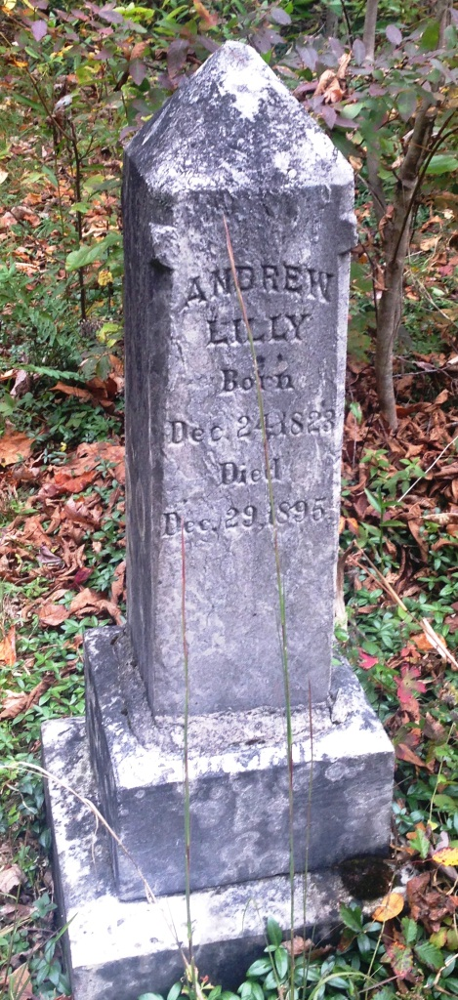

Andrew H. Lilly
24 December 1823 – 27 December 1895
Lilly line · Pemberton, Raleigh County, West Virginia
Profile status: SUPPORTED
Quick Facts
Born
24 December 1823, Giles County, Virginia UNPROVED (no primary record; the death register’s age, 72 years 3 days at 27 December 1895, fits 24 December 1823 exactly, and the stone reads “Born Dec. 24, 1823”. The old compiled account’s “1828” was a misreading of the weathered “3” on the stone, resolved by the signed-in pass)
Died
27 December 1895, Raleigh County, West Virginia, age 72 SUPPORTED (Raleigh County Register of Deaths, image read: age 72y 3d, cause Fever, parents “Wm. & Margaret Shumate Lilly”, informant Emily J. Sesler, his daughter. The stone says 29 December and a compiled book says 30 December — neither is adopted)
Married
Marinda Walker, about 1839
UNPROVED (WikiTree only; no record found. The first documented child, Sarah Frances, dates to about 1845, so the marriage could be as late as about 1844 — Andrew would have been about 15 at an 1839 marriage and 20 at an 1844 one)
Second marriage
Elizabeth A. Sesler, 23 August 1894, Raleigh County SUPPORTED (Raleigh County marriage transcript: “Sesler, Elizabeth A. 50 to Andrew Lilly 70 Summers”. The bride was named Sesler in the transcript; her identity beyond that is unproved — the compiled “Elizabeth Austin Gunter” has no support, and FamilySearch’s “Elizabeth A. Gunther SESLER” is a tree assertion)
Occupation
Farmer SUPPORTED (death register. No record makes him a master farmer, blacksmith, or timberwright — the phrase was tested and has no support anywhere)
Nickname
“Sockhead” / “Sock Head Andy” SUPPORTED (Miller 1908: “Sock Head Andy”; the West Virginia Encyclopedia: “Sockhead Andy Lilly wore a stocking cap”. The prisoner-of-war sock origin story is lore only, with no support)
Military
151st Virginia Militia, Company E, about seven weeks, 1861 — state militia, not Confederate service SUPPORTED (roster line, read directly: “E Lilly Andrew L. Private”, mustered 23 August 1861, discharged October 1861. The roll’s initial is “L.”, the family’s is “H.”, so identity is supported but unproved. The National Park Service index does list an “Andrew Lilly” in the 36th Virginia Infantry — as a Private in Company C, not Company E, with no age or residence — so identity as this Andrew is unproved, a namesake only, and no SCV/UDC flag is set)
Buried
Pemberton Cemetery, Pemberton, Raleigh County, West Virginia SUPPORTED (memorial 51580151; the stone reads “ANDREW LILLY — Born Dec. 24, 1823 — Died Dec. 29, 1895”)
Residence
Pemberton, Raleigh County; Summers County in 1894 SUPPORTED (death and burial in Raleigh County; the 1894 marriage transcript gives his residence as “Summers” at age 70. Pemberton sits near the Raleigh/Summers line — a move, a border household, or a clerk’s shorthand, unresolved)
Immediate Family
Parents
William S. Lilly Sr. ×
Margaret “Peggy” Shumate SUPPORTEDSupported, not proved: no single document read names Andrew as William Sr. × Margaret’s son, but three legs point the same way — Miller 1908 names William Lilly as the father of Andrew “Sock Head Andy”; Andrew’s death register names his father “Wm.” and his mother “Margaret/Shumate”; and the West Virginia Archives Lilly Family Collection (Ms2003-001, Box 1 item 9) holds “William S. Lilly, Sr. and Margaret Shumate family info,” contents not digitised. Their dates are open: William Sr. is carried as about 1778–1853 in the dig, against Find a Grave’s 18 July 1780 – 1 February 1865 (aged 84), whose own biography transcription says 1 July 1865 (age 85) — the February-versus-July conflict inside Find a Grave is unresolved, and 1853 is not stated here as settled. Margaret is carried as born 1 May 1801 (Geni, Find a Grave, FamilySearch) against the dig’s about 1778 — 1801 is the stronger date (she would have been 22 at Andrew’s birth and 47 at her last child James’s birth in 1847; about 1778 would make her about 69 at James’s birth), but the conflict stays open and about 1778 is not stated here as settled. The 20 December 1822 marriage, Margaret’s death 28 June 1868, and her parents Tollison Shumate × Elizabeth Burdette rest on one user-compiled source (Don Norman) that is internally inconsistent, and are UNPROVED. “Selargitt” / “Selargrit” for William and “Frances” for Margaret are not adopted — no published or archive source gives them. The full conflicts are in Research Notes.
Spouse
Marinda Walker (19 March 1816 – 31 July 1888), married about 1839
UNPROVEDHis first wife and the mother of his nine daughters. The marriage date is WikiTree only; no record has been found, and the first documented child dates to about 1845. She died 31 July 1888, Raleigh County, cause Flux, age 72y 4m 12d — the death register image was read directly.
Second wife
Elizabeth A. Sesler (born about 1844), married 23 August 1894, Raleigh County
SUPPORTEDMarried a year before his death, when he was 70 and she was 50. The transcript names the bride Sesler. Her identity beyond that is unproved: the compiled “Elizabeth Austin Gunter” has no support, and FamilySearch’s “Elizabeth A. Gunther SESLER” is a tree assertion. She cannot be the mother of Samuel William Sesler (born about 1853, when she was about 9); the stepmother reading is supported — Jacob Sesler’s children were by an earlier wife, Mary. No children with Andrew.
Children
Sarah Frances Lilly Smith (born about 1845; died January 1880, Richmond, Virginia; married John Alex Smith)
UNPROVEDValeria Margaret Lilly (born 4 October 1846; died 3 July 1887, Gales Creek, Oregon; married James Pisarius Lilly)
UNPROVEDJulia A. Lilly (born about 1850; married Edmond Lilly 23 March 1872)
SUPPORTEDNancy Elizabeth Lilly Souder (born about 1850; died 25 March 1885, Pemberton; married Richard Jefferson Souder 6 February 1873)
SUPPORTEDVashti / Vashie Lavina Lilly Plumley (born about 1853; died 1874; married George Washington Plumley 16 January 1873)
SUPPORTEDMary Ellen Lilly Griffith (born about 1853; died 1880; married John H. Griffith 20 October 1871)
SUPPORTEDMarinda Celia Lilly (born 6 July 1854, Wyoming County; died 26 June 1923, Beckley; married William Jacob Canaday 25 September 1878)
SUPPORTEDEmily Jane Lilly Sesler (born 1856; married Samuel William Sesler 3 June 1875)
SUPPORTEDJuliana Olive Lilly Hawley (born 1858; died 4 October 1941, Raleigh County; married John Barnett Fleming Hawley 1875)
SUPPORTEDNine daughters, no sons. Marinda Celia is the direct line — her parentage is now register-supported by the Wyoming County birth register (row #14, read directly: father Andrew Lilly, mother Marinda Lilly), not a tree reconstruction; her death rests on the stone and the obituary only, since no 1923 death certificate exists. FamilySearch IDs: Sarah Frances (no FS ID verified this pass); Valeria Margaret L8MV-CH2; Julia Ann GWVQ-G8R; Nancy Elizabeth L8MV-CVD; Vashti GNXL-11H; Mary Ellen L8MV-CP3; Marinda Celia L79R-ZHD; Emily Jane L4FT-VR8; Juliana Olive L4Q4-V15. Geni links eleven children — a duplicate Nancy Elizabeth and a Linda — and no Octavia. FamilySearch lists twelve children, adding two infants who died in December 1859 (Infant Lilly K64T-SC4, male; Lilly MZJN-TKR, female), Elizabeth Victoria Lilly GPPQ-71R (born 1860, died December 1860), and Linda Lilly GPRL-P46 (born 1862). None of those four appears in any census: the 1860 household holds eleven people, the 1870 household ten, and the 1880 household is Andrew 56, Marinda 65, and grandson James E. Plumley 6. Linda is not carried here as a proven daughter, and Octavia is not carried as a separate tenth daughter — see Research Notes. Three daughters are parentage-proved at transcript level: Julia A., Mary Ellen, and Nancy Elizabeth are each entered in the Raleigh County marriage transcript as “d/o Andrew/Marinda”.
Siblings
Ameger Lilly
SUPPORTEDRobert “Fighting Bob” Lilly
SUPPORTEDTollison Lilly (1825–1863)
SUPPORTEDGeorge Lilly (deceased, never married)
SUPPORTEDWilliam S. “Shoemaker Bill” Lilly (1828–1895)
SUPPORTEDJoseph “Curly Joe” Lilly
SUPPORTEDJames “Grinning Jim” Lilly
SUPPORTEDFull brothers by Miller 1908, read in full: William, fourth son of pioneer Robert Lilly, is named as the father of eight sons — Ameger, Robert “Fighting Bob”, Andrew “Sock Head Andy”, Tollison, George, William S. “Shoemaker Bill”, Joseph “Curly Joe”, and James “Grinning Jim” — in Miller’s order. Miller names no wife, no mother, and no dates for this William, and no daughters. Miller’s single-generation William is contradicted as stated — a man born early enough to be the son of a settler of about 1740–1750 cannot father a child in 1823 — so Miller has collapsed two generations into one William, and his generation assignment is not used. The tree lists differ and are not merged here: WikiTree Lilly-238 (William Sr.) and Shumate-314 (Margaret) disagree on names and years (Elizabeth 1806–1895 and Mary Frances on one side; Mary Polly, George W., Frances, and Green on the other; Tollison 1826 against 1825), and FamilySearch lists ten children for William Sr. No sibling has a profile page, so no sibling name is linked here.
On Family Tree Sites
Life Timeline
24 December 1823 · age 0
Born, Giles County, Virginia UNPROVED (no primary record; the death register’s age, 72 years 3 days, fits exactly, and the stone reads “Born Dec. 24, 1823”)
About 1839
Married Marinda Walker UNPROVED (WikiTree only; no record found — the marriage could be as late as about 1844)
About 1845–1858
Nine daughters born, all in Virginia: Sarah Frances about 1845, Valeria Margaret 1846, Julia A. about 1850, Nancy Elizabeth about 1850, Vashti about 1853, Mary Ellen about 1853, Marinda Celia 6 July 1854, Emily Jane 1856, Juliana Olive 1858 SUPPORTED (censuses and the marriage transcript; Marinda Celia’s birth is register-supported — the birth register, row #14, names both parents)
6 July 1860 · age 36
Census, Head of Piney, Raleigh County, Virginia: Andrew 35, Marinda 45, and nine children at home — Sarah 15, Valeria 13, Julia 12, Nancy 10, Vasti 9, Mary 7, Celia 5, Jane 4, Olive 2 DOCUMENTED (image read; eleven people in the household; no Linda, no Octavia)
23 August 1861 · age 37
Mustered, 151st Virginia Militia, Company E, at the farm of Joseph Brammer SUPPORTED (roster line “E Lilly Andrew L. Private”; state militia, discharged October 1861 — not Confederate service)
22 August 1870 · age 46
Census, Town District, Raleigh County: Andrew 46, Marinda 50, and eight children — Sarah F. 23, Julian 21, Nancy E. 20, Vasta L. 17, Mary E. 16, Martha S. 14, Emily J. 13, Julina D. 11 DOCUMENTED (image read; “Martha S” 14 is Marinda Celia, an index error; “Julian” 21 and “Julina D” 11 are two separate persons, Julia Ann and Juliana Olive; Valeria absent, married out)
24 June 1880 · age 56
Census, Town District, Raleigh County: Andrew 56, Marinda 65, and grandson James E. Plumley 6 DOCUMENTED (image read; no daughter remained at home; next door, his son-in-law Wm. J. Canada 27 with Marinda C. 25 and Roberta L. 7 months)
31 July 1888 · age 64
Marinda died, Raleigh County, cause Flux, age 72 DOCUMENTED (Register of Deaths, v1 p46 line 30, image read; informant Andrew Lilly, her husband)
23 August 1894 · age 70
Married Elizabeth A. Sesler, Raleigh County SUPPORTED (marriage transcript; bride named Sesler; her identity beyond that is unproved)
27 December 1895 · age 72
Died, Raleigh County, age 72, cause Fever SUPPORTED (death register, image read; the stone says 29 December and a compiled book says 30 December — neither adopted)
Burial
Pemberton Cemetery, Pemberton, Raleigh County SUPPORTED
Life Story
Andrew H. Lilly was born 24 December 1823 in Giles County, Virginia — the date rests on his stone and on the arithmetic of his death register, not on a birth record, since Virginia recorded no civil births before 1853 — and died 27 December 1895 in Raleigh County, West Virginia, aged 72, a farmer, buried at Pemberton. He was the son, by supported but unproved parentage, of William S. Lilly Sr. and Margaret “Peggy” Shumate, and he was known as “Sockhead” or “Sock Head Andy,” for the stocking cap he wore. He married Marinda Walker about 1839 — the date is WikiTree only, and the first documented child dates to about 1845 — and they had nine daughters and no sons.
The censuses trace the household. In 1860, at Head of Piney in Raleigh County, Andrew was 35 and Marinda 45, with nine children at home from Sarah, 15, down to Olive, 2 — eleven people under one roof, and no Linda and no Octavia among them. In 1870 the household held ten: Andrew 46, Marinda 50, and eight children, Valeria already married out. In 1880 the house was down to three — Andrew 56, Marinda 65, and their six-year-old grandson James E. Plumley — with no daughter left at home, and next door his son-in-law William J. Canaday, 27, with Marinda Celia, 25, and their baby Roberta. Marinda died in 1888, of flux, aged 72; Andrew married again in 1894, to Elizabeth A. Sesler, and died the next year.
His military record is small and exact, and the page keeps it that way. He mustered 23 August 1861 in Company E of the 151st Virginia Militia, a state militia unit, and was discharged that October after about seven weeks — not Confederate service, and not a qualifying ancestor for any lineage society. The National Park Service index does list an “Andrew Lilly” in the 36th Virginia Infantry, but as a Private in Company C, not Company E, with no age or residence given — so that man may be a namesake, and no Confederate service is claimed here. The prisoner-of-war story and the tale of brooches carved from human bones have no support anywhere, and the old account’s “master farmer, blacksmith, timberwright” has none either: the only occupation any record gives him is farmer.
His daughter Marinda Celia carries the line, marrying William Jacob Canaday in 1878 — and her parentage, long carried as a tree reconstruction, is now supported by a record: the Wyoming County birth register for 6 July 1854 names her father Andrew Lilly and her mother Marinda Lilly outright. Andrew is buried at Pemberton beside Marinda, their stones a matched pair — his reading “Born Dec. 24, 1823 — Died Dec. 29, 1895,” hers “Born Mar. 19, 1816 — Died July 31, 1888.” No portrait of him has been found anywhere; the stone is the only image.
Sources and Evidence
- Raleigh County, West Virginia, Register of Deaths (image read directly): “Lilly, Andrew” — male, Dec. 27, age 72 years, 3 days, Farmer, parents “Wm. & Margaret Shumate Lilly”, informant “Emily J. Sesler — Daughter”, cause of death “Fever,” marital status “M.” (West Virginia Archives, detail Id 4978789) SUPPORTED
- Raleigh County, West Virginia, Register of Deaths, v1 p46, line 30 (image read directly): Marinda Lilly, died 31 July 1888, cause Flux, age 72y 4m 12d, parents “C. H. A. & Francis Walker”, born Mercer Co., informant Andrew Lilly, her husband (West Virginia Archives, image Id 4979142; FamilySearch index ark NM53-9TT) DOCUMENTED
- 1860 census, Head of Piney, Raleigh County, Virginia, 6 July 1860, dwelling 476 (image read; FamilySearch ark M41Y-G3Z): Andrew Lilly 35, Farmer, Marinda Lilly 45, Sarah Lilly 15, Valeria Lilly 13, Julia Lilly 12, Nancy Lilly 10, Vasti Lilly 9, Mary Lilly 7, Celia Lilly 5, Jane Lilly 4, Olive Lilly 2 — eleven people DOCUMENTED
- 1870 census, Town District, Raleigh County, West Virginia, 22 August 1870, household 61 (image read; FamilySearch ark MZ4B-PT1): Andrew Lilly 46, Farming, Marinda Lilly 50, Sarah F. Lilly 23, Julian Lilly 21, Nancy E. Lilly 20, Vasta L. Lilly 17, Mary E. Lilly 16, Martha S. Lilly 14, Emily J. Lilly 13, Julina D. Lilly 11 — ten people DOCUMENTED
- 1880 census, Town District (ED 131), Raleigh County, West Virginia, 24 June 1880, dwelling 191/199 (image read; FamilySearch ark M6T7-5RN): Andrew Lilly 56, Head, Farmer; Marinda Lilly 65, Wife, Keeping house; grandson James E. Plumley 6 DOCUMENTED
- Wyoming County, West Virginia, Register of Births, row #14 (image read; FamilySearch ark X55G-W26): child “Marinda Lilly,” born 6 July 1854, father “Andrew Lilly,” mother “Marinda Lilly” DOCUMENTED
- Raleigh County, West Virginia, Register of Marriages, 1878, entry No. 57 (image read; FamilySearch ark 3QS7-89Z5-F5QG): date “Septr 25” (25 September 1878); groom “Wm J. Canady,” 26, born Patrick Co., Va.; bride “Marinda C. Lilly,” 24, born Mercer Co., WVa.; parents not named; minister read as “Charles W. Lilly” (uncertain reading) DOCUMENTED
- Find a Grave memorial 51580151, Andrew Lilly (read directly): stone photo 90540901, David & Sherry Winant, 13 October 2013 — “ANDREW LILLY — Born Dec. 24, 1823 — Died Dec. 29, 1895”; burial Pemberton Cemetery SUPPORTED
- Find a Grave memorial 51580150, Marinda Lilly (read directly): stone photo 90577581, David & Sherry Winant, 13 October 2013 — “MARINDA / Wife of / Andrew Lilly / Born / Mar. 19, 1816 / Died / July 31, 1888”; burial Pemberton Cemetery SUPPORTED
- Raleigh County marriage transcript (WVGenWeb, read directly): “Sesler, Elizabeth A. 50 to Andrew Lilly 70 Summers — 23 Aug 1894”; “Souders, Richard Jeff. 19 Patrick s/o Emanuel/Oney to Nancy Eliz Lilly 23 Wyo d/o Andrew/Marinda 6 Feb 1873”; “Lilly, Mary Ellen 18 Wyoming d/o Andrew/Marinda to John H. Griffith 21 Patrick s/o John/Martha 20 Oct 1871”; “Lilly, Edmond 20 Raleigh s/o Allen to Julia A. Lilly 22 Wyoming d/o Andrew/Marinda 23 Mar 1872”; “Lilly, N.l. 20 to George W. Plumley 21 16 Jan 1873”; “Lilly, Emily Jane 19 Wyoming to Samuel William Sesler 22 Montgomery 3 Jun 1875”; the Hawley marriage in four variant entries, 30 Sep 1875 SUPPORTED
- 151st Regiment Virginia Militia roster (WVGenWeb, Mercer County, read directly): Company E, Capt. Thomas J. Massey’s Company, mustered 23 August 1861 at the farm of Joseph Brammer; “E Lilly Andrew L. Private”; unit in service August to 13 October 1861; ten men lost, nine to sickness SUPPORTED
- National Park Service, Civil War Soldiers & Sailors System, soldier details (read directly): “Lilly, Andrew,” 36th Regiment, Virginia Infantry, Confederacy, Company C, Private, film M382 roll 34 — no age, residence, or enlistment date given SUPPORTED
- FamilySearch, War of 1812 Index to Service Records (NARA M602, roll 217), card image read (ark Q292-M1K4): “Walker, C. H. Amos,” 4th Regiment Virginia Militia, rank Sergeant — the card carries no dates SUPPORTED
- Miller, History of Summers County (1908), Lilly section, pp. 462–465 (transcription, read in full): William, fourth son of pioneer Robert Lilly, father of eight sons — Ameger, Robert “Fighting Bob”, Andrew “Sock Head Andy”, Tollison, George, William S. “Shoemaker Bill”, Joseph “Curly Joe”, James “Grinning Jim” — and the pioneer Robert’s settlement on the Bluestone about 1740–1750 SUPPORTED
- West Virginia Encyclopedia, Lilly Family entry (read directly): “Sockhead Andy Lilly wore a stocking cap” SUPPORTED
- Johnston, A History of Middle New River Settlements (1906), p. 449 (verbatim transcription, read directly): “Frances, who married Captain Christianos H. A. Walker, son of Charles” — daughter of John Peters and his wife, Miss Simms SUPPORTED
- Giles County Justices Court, Minute Book 6, 26 July 1836 (transcription, read directly on WeRelate): on motion of Elijah Peters, executor of John Peters deceased, the court certified the heirs — John, Elijah, Elizabeth Bailey, Philip, Christian, William Peters, “Frances Walker,” and Catherine Thompson — to the War Department SUPPORTED
- West Virginia Archives, Lilly Family Collection Ms2003-001, finding aid (read directly): Box 1 item 9, “William S. Lilly, Sr. and Margaret Shumate family info” (contents not digitised); Box 2 item 19, deed book 5 p. 172, William Sr. giving land to William Lilly Jr., 1859; Box 2 item 24, deed book 3 pp. 596–597, Margaret Shumate to William Lilly Jr., 1853 SUPPORTED
- Don Norman, Descendants of James Burdette (read directly): Margaret “Peggy” Shumate, born 1 May 1801, died 28 June 1868, married William S. Lilly 20 December 1822, daughter of Tollison Shumate × Elizabeth Burdette — UNPROVED, single user-compiled source, internally inconsistent (a second listed child, Elizabeth, born 1819, against her mother’s death in 1812) UNPROVED
- WikiTree, Andrew H. Lilly (Lilly-1009) (read live): born about 24 December 1823, died about 27 December 1895, Raleigh County, age about 72; son of William S. Lilly Sr. × Margaret (Shumate) Lilly; husband of Marinda (Walker) Lilly and Elizabeth A. (Sesler) Lilly; 36th Virginia / Confederate service “not supported and not claimed here” SUPPORTED
- WikiTree, Marinda (Walker) Lilly (Walker-21318) (read live): born about 19 March 1816, died about 31 July 1888, age about 72, Raleigh County; daughter of Christianos H. A. Walker × Frances Jane (Peters) Walker SUPPORTED
- WikiTree, Christianos H. A. Walker (Walker-16078) (read live): born 14 March 1782, Orange, Virginia; died 14 February 1876, Flat Top, Mercer County; “Sargeant 4th Regiment Virginia Militia September 11, 1813” SUPPORTED
- Geni profiles, read live 9 November 2026: Andrew H. “Sockhead” Lilly 6000000002275004630; Marinda Lilly 6000000002275004654; Marinda Celia Canaday 6000000150899811897; William Jacob Canaday 6000000150899452893; Christianos H. A. Walker 6000000006419148904; Frances Peters 6000000002274162281; William Lilly Sr. 6000000001900524767; Margaret “Peggy” Shumate 6000000002274126468; children Valeria Margaret 6000000037124563327, Sarah Frances 6000000152474577873, Julia A 6000000152475273832, Nancy Elizabeth Souder 6000000152474322877, Vashti 6000000152474965850, Mary Ellen 6000000152474452909, Emily Jane 6000000152475165862, Julina Olive 6000000025220648950, Linda 6000000152475155862, and the duplicate Nancy Elizabeth Lilly 6000000221396478579 SUPPORTED
- FamilySearch, read live 9 November 2026: Andrew LZYC-5GS (20 sources); Marinda L4BB-1N4; Marinda Celia L79R-ZHD (21 sources, including the 1854 birth record and the 1927 “Marinda C. Lilly, West Virginia, Deaths” source, ark F1Y3-QLL — read in full: it is William J. Canady’s 21 January 1927 death record, mis-attached to Marinda Celia); William Jacob LHRC-XSD; children Valeria Margaret L8MV-CH2, Julia Ann GWVQ-G8R, Nancy Elizabeth L8MV-CVD, Vashti GNXL-11H, Mary Ellen L8MV-CP3, Emily Jane L4FT-VR8, Juliana Olive L4Q4-V15, Infant Lilly K64T-SC4, Lilly MZJN-TKR, Elizabeth Victoria GPPQ-71R, Linda GPRL-P46 SUPPORTED
- Ancestry, Tricia’s tree 44342901, read signed in 9 November 2026: Andrew H. (Sockhead) Lilly 6189640075; Marinda Walker 6189640074; Marinda Celia Lilly 6189636680; Andrew’s parents William S. Lilly 1784–1865 × Frances M. Shumate 1801–1868; ten visible children including “Martha S Lilly 1846-” (a duplicate artifact of the 1870 census’s “Martha S Lilly”) SUPPORTED
- RootsWeb, “Descendants of Ralph Blankenship” (read directly): “Juliana Olive Lilly, daughter of Andrew ‘Sockhead’ Lilly and Marinda Walker, m. John Barnett Fleming Hawley 19 Sep 1875 Raleigh Co.” SUPPORTED
- Find a Grave memorials, read directly 9 November 2026: Andrew 51580151; Marinda 51580150; Marinda Celia 137867617 (stone “MRS. CELIA CANADAY — 1857–1923”; the 1857 is a carver’s error against the 1854 birth register); William J. 137048821 (stone “W. J. CANADAY — 1853–1927”; the 1853 is a carver’s error against the death certificate’s 15 August 1852); Sarah Frances 229239411 (no photo; 1880 mortality schedule: Sarah Smith, married, born about 1845, age 35, died January 1880, cause puerperal fever, Richmond, Henrico, Virginia) SUPPORTED
- Death certificate of William Jacob Canaday, 21 January 1927, Beckley, cert. No. 1220 (image read; film 1953329, image 1248): born 15 August 1852; widowed, wife “Marinda C. Lilly”; cause “Struck by Train”; father Burl Canady; mother’s maiden name recorded as not known DOCUMENTED
Grades: DOCUMENTED an original record says it · SUPPORTED several records point to it · FAMILY ACCOUNT the family’s own telling · UNPROVED a lead, not proved.
Research Notes and Open Questions
- Grades: DOCUMENTED means an original record read directly says it; SUPPORTED means several records point to it; FAMILY ACCOUNT means the family’s own telling; UNPROVED means a lead, not proved. Every fact on this page carries its grade.
- Birth year, resolved (C1): the stone reads “Born Dec. 24, 1823,” and the death register’s age, 72 years 3 days at 27 December 1895, computes to 24 December 1823 exactly. The old compiled account’s “1828” was a misreading of the weathered “3” on the stone and is resolved, not carried.
- Death day, resolved toward the register (C2/G4): the death register image, read directly, says 27 December 1895, age 72y 3d, cause Fever. The stone says 29 December and a compiled book says 30 December — both are noted, neither is adopted.
- Marriage date, open (C5): about 1839 is WikiTree only, and no record has been found. Andrew would have been about 15 at an 1839 marriage, and the first documented child dates to about 1845, so the marriage could be as late as about 1844. The hunt should cover Giles bonds 1839–1845, and Mercer, Raleigh, and Summers registers — not 1839 alone.
- The Hawley bride (C8/C9): the Raleigh marriage transcript carries one marriage under four variant names — “Octavia” 17 to B. J. Hawley 21, “Olivia” 17 to John Barnett Flemming Hawley, “Oliva” to B. J. Hawley, “Olivia” to John Barnett Flemming Hawley — all 30 September 1875, same bride age, same groom age. The most economical reading is one marriage, duplicated under variant spellings, not two sisters marrying two Hawleys the same day. RootsWeb’s compiled genealogy names the bride Juliana Olive outright, and her age fits exactly (born 1858, 17 in September 1875), so the bride is SUPPORTED as Juliana Olive. But the merge claim is now weakened: Geni’s Juliana married John Barnette Fleming Hawley, while the transcript groom for Octavia is B. J. Hawley — so Juliana = Octavia is NOT stated here as settled, and Octavia is NOT listed as a separate tenth daughter. The day is also open: 19 September (RootsWeb) against 30 September (transcript, four entries).
- Julia A. and the 1890 Houchins marriage (C10): Julia A. married Edmond Lilly 23 March 1872, aged 22 (born about 1850), proved as Andrew × Marinda’s daughter by the transcript’s “d/o Andrew/Marinda.” A Julia A. Lilly, 34, married Granvil Shanklin Houchins 7 July 1890 — age 34 points to a birth about 1855–56, against the 1872 age. The 1890 marriage is not folded into Julia A.’s record without a check. Cross-flag: the death register, same page as Marinda’s entry, line 29 — “Lilly J. A.” died 5 September 1888, age 40, parents Elijah & Sallie Lilly, consort “Julia A. Lilly,” informant L. A. Lilly (“Brother”). Whether J. A. Lilly was a second husband of Julia A. is open.
- Children roster, count open: the dig counts nine daughters, with Octavia as Juliana; Geni links eleven children (a duplicate Nancy Elizabeth plus Linda, no Octavia); FamilySearch lists twelve (two infants who died in December 1859, Elizabeth Victoria, born 1860, died December 1860, and Linda, born 1862); Ancestry shows ten visible, including “Martha S Lilly 1846-”, a duplicate artifact of the 1870 census’s “Martha S Lilly”; Find a Grave lists seven. None of the four FamilySearch-only names — the two 1859 infants, Elizabeth Victoria, Linda — appears in any census: the 1860 household holds eleven people, the 1870 household ten, and the 1880 household is Andrew 56, Marinda 65, and grandson James E. Plumley 6. Linda is not carried here as a proven daughter. Zero sons are documented. The old compiled account’s “22 children” is contradicted in magnitude.
- Parents, SUPPORTED not proved: three legs point the same way — Miller 1908 names William as the father of Andrew “Sock Head Andy”; Andrew’s death register names his father “Wm.” and his mother “Margaret/Shumate”; and the West Virginia Archives holds “William S. Lilly, Sr. and Margaret Shumate family info” (Ms2003-001, Box 1 item 9), contents not digitised. No single document read states the link outright. Andrew’s birth, 24 December 1823, falls one year and four days after the carried 20 December 1822 marriage — consistency only.
- William Sr.’s dates, open: the dig carries about 1778–1853; Find a Grave carries 18 July 1780 – 1 February 1865 (aged 84), while the memorial’s own biography transcription says 1 July 1865 (age 85) — the February-versus-July conflict inside Find a Grave is unresolved, and 1853 is not stated here as settled. Geni estimates 1783–1785; Ancestry gives 1784–1865.
- Margaret’s birth, open: Geni, Find a Grave, and FamilySearch give 1 May 1801 (died 28 June 1868, aged 67); the dig and the couple document carry about 1778. The 1801 date is the stronger one — she would have been 22 at Andrew’s birth and 47 at her last child James’s birth in 1847, while about 1778 would make her about 69 at James’s birth — but the conflict stays open and about 1778 is not stated here as settled. The 20 December 1822 marriage, her death 28 June 1868, and her parents Tollison Shumate × Elizabeth Burdette rest on one user-compiled source (Don Norman) that is internally inconsistent — a second listed child, Elizabeth, born 1819, against her mother’s death in 1812 — and are UNPROVED (C15). Elizabeth Burdette’s death day is also split: 8 August 1812 (Norman) against 5 August 1812 (GenealogieOnline) (C16).
- Generational compression (C13): Miller’s single-generation William — fourth son of a pioneer who settled about 1740–1750 and died in 1810 aged 114 — is contradicted as stated: a man born early enough to be that settler’s son cannot father a child in 1823. Miller has collapsed two generations into one William, and his generation assignment is not used. Pioneer Robert Lilly is not attached as William Sr.’s father as fact — WikiTree Lilly-238 does so as “Confident” while its own Research Notes warn the placement is suspect. The pioneer’s longevity, 114 years, and his wife’s 111, are Miller’s unbacked claims.
- “Selargitt” / “Selargrit” and “Frances” (C17): not adopted. No published or archive source gives “Selargitt” or “Selargrit” for William — Miller calls him only “William Lilly” or “William S. Lilly,” Norman calls him “William S. Lilly,” and the archives call him “William S. Lilly, Sr.” “Frances” for Margaret appears only in the old compiled account and user trees; Norman calls her only “Margaret ‘Peggy’.”
- Sibling lists differ (C14): WikiTree Lilly-238 (William Sr.) and Shumate-314 (Margaret) disagree on names and years, and FamilySearch lists ten children for William Sr. They are not merged here. Miller’s eight sons are the published-history list and are carried in the Siblings card.
- Military (C27/C28/G6): the 151st Virginia Militia roster line, “E Lilly Andrew L. Private,” is SUPPORTED as a transcription read directly — state militia, about seven weeks, discharged October 1861, not Confederate service. The roll’s initial is “L.” against the family’s “H.”, so identity is supported but unproved. The National Park Service index lists an “Andrew Lilly” in the 36th Virginia Infantry as a Private in Company C (M382 roll 34), not Company E, the “Raleigh Rangers,” with no age or residence — identity as this Andrew is UNPROVED, a namesake only. No SCV/UDC flag is set. The compiled-service card images on M382 roll 34 have not been opened.
- Residence (C35): the 1894 marriage transcript gives Andrew’s residence as “Summers” at age 70, against death and burial in Raleigh County. Pemberton sits near the county line — a move, a border household, or a clerk’s shorthand, unresolved.
- Second wife (C11/C12): the 1894 transcript names the bride Sesler, not Gunter. “Elizabeth Austin Gunter” is contradicted as a name — “Austin” appears in no record read — and FamilySearch’s “Elizabeth A. Gunther SESLER” is a tree assertion. Her identity beyond the transcript is unproved; her age 50 in 1894 points to a birth about 1844, matching Ancestry’s 1844. She cannot be Samuel William Sesler’s mother (born about 1853, when she was about 9); the stepmother reading is supported — Jacob Sesler’s children were by an earlier wife, Mary.
- What is NOT stated here: the prisoner-of-war sock origin story and the human-bone brooches (unsupported lore, removed from WikiTree Lilly-1009 as unsupported); “master farmer, blacksmith, timberwright” (tested, no support anywhere); the old compiled account’s “22 children” (contradicted); Christianos Walker as “Captain” in service (he was a sergeant); the “now or never!” elopement as fact (unbacked tradition); and the “Crispianis Walker” excerpt (downgraded unattributed outlier, not used).
- The couple document differs: it carries ten children with Octavia separate — the dig counts nine, with Octavia as Juliana — and it lists Marinda Celia’s 1923 death certificate as an open pull while treating her 26 June 1923 death as a fact. The signed-in pass establishes there is no 1923 death certificate for Marinda Celia in the West Virginia Archives or FamilySearch: the date rests on her stone and her obituary only. The document is never edited.
- Still open: the Giles County marriage bonds 1821–1853 (FamilySearch film 31740 / DGS 4011606) have not been searched by image — for the Andrew × Marinda marriage and for Christianos × Frances, 11 April 1810; the M382 roll 34 card images for the National Park Service 36th-Virginia Andrew Lilly have not been opened; the 1850 Andrew census was spotted but not read; four Find a Grave large images were blocked by the image-server rate limit (William Sr.’s marker, Margaret’s marker, Christianos’s stones, Frances’s photo gallery); Numa Dink Walker’s Geni ID was not verified; Marinda’s death-register image (West Virginia Archives Id 4979142) was not re-read in the signed-in pass; and the second 1854 birth source, “Manda S Lilley,” was not opened (likely a second index entry for the same child).
- Tree checks, signed in 9 November 2026: Geni — Andrew 6000000002275004630, Marinda 6000000002275004654; FamilySearch — Andrew LZYC-5GS (20 sources), Marinda L4BB-1N4; WikiTree — Andrew Lilly-1009, Marinda Walker-21318; Ancestry, Tricia’s tree — Andrew 6189640075, Marinda 6189640074; Find a Grave — Andrew 51580151, Marinda 51580150.